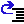
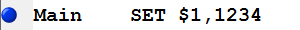
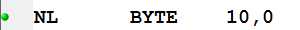
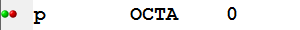

If an MMIX source file is in the editor, you can start
the MMIX simulator in debugging mode
either by
Selecting "Debug" from the "MMIX" menu.
Pressing the F5 key.
Pressing the Debugg/Continue Button .
If the source file has changed, you will be asked if you want
to save your changes.
Then you will be asked whether you want to assemble the source file
(unless the mmo file on disk is newer than the source file.)
Running the assembler will also collect information about
connecting the lines and symbols in your source file to locations
in memory. This infomation is necessary while debugging.
If the assembler has finished without errors, debugging will start.
Once the debugger has started a collection of new buttons is displayed
in the button bar. These buttons are a more convenient alternative to
the commands that you find in the MMIX menu.
You can further customize the debuggers behaviour through the Debug Options dialog, which you can access through the Options menu.
Running, Stopping, and Stepwise Execution
Debugg/Continue Continue execution instructions until a breakpoint or the end of the Program is reached. This function can also be invoked by pressing the F5 key.
Step Instruction
Execute one instruction and stop again.
Step Over
Like Step Instruction, unless the current instruction is a
PUSHJ or PUSHGO instruction. In this case run
the program without stopping until the corresponding POP
instruction is executed (unless a breakpoint or the end of the program intervenes).
 Step Out
Continue execution until the end of the current subroutine
(unless a breakpoint or the end of the program intervenes).
Break Execution
Interrupt a running execution, as if a breakpoint was hit.
Halt Execution
Terminate the debugging session.
Setting Breakpoints and Tracepoints
There are three buttons to toggle (set or unset) breakpoints and one button to toggle a tracepoint. To set a breakpoint move the cursor in the edit window to the line containing the instruction and press the appropriate button.
toggle an execute breakpoint. The program will stop after or before executing the first instruction on this line.
Execute breakpoint exampe:
You can toggle execute breakpoint also directly by clicking with the mouse in the margin.
toggle a read breakpoint. The program will stop after any read access to this memory location.
Read breakpoint exampe:
toggle a write breakpoint. The program will stop after any write access to this memory location.
Read and write breakpoint exampe:
toggle a tracepoint. This instruction will be shown in the trace window each time it is executed.